Lecture 27
Mass-Spectrometry Proteomics + Metabolomics
RNA-seq counts transcripts; mass spectrometry counts the proteins that actually do the work — and the metabolites that show what the proteins did. LC-MS/MS turns proteins into peptides, ionises them, fragments them along the backbone, and matches the resulting b/y peaks to a database. Target-decoy gives the false-discovery rate; DDA and DIA give two ways to acquire spectra; LFQ, SILAC, and TMT give three ways to quantify. Then PTMs, plasma biomarkers, chemoproteomics — and metabolomics, where ~30–50% of peaks are still unidentified. The whole field is matched-filter detection in EE clothing.
Learning objectives
- Describe the principles of LC-MS/MS for proteomic measurement: digestion, separation, ionisation, fragmentation, mass analysis.
- Distinguish bottom-up, top-down, and middle-down proteomics; describe DDA vs DIA acquisition.
- Run a basic peptide identification: spectra → database search → protein inference → FDR filtering.
- Apply quantification methods (LFQ, SILAC, TMT, iTRAQ) and recognise their statistical properties.
- Distinguish proteomics from RNA-seq: protein vs mRNA correlation, PTMs, splice isoforms, secretome.
- Describe key proteomics applications: biomarker discovery, drug target validation (chemoproteomics), structural proteomics.
- Frame MS proteomics in EE terms: spectra as 1D signals; peptide ID as constrained search; DIA as compressed sensing on a peptide-coverage matrix.
Part 1 — From Mass Spectrum to Peptide
1.1 Why proteins, not just transcripts
RNA-seq measures transcript abundance. But protein abundance is what does the work in cells. The correlation between mRNA and protein abundance is surprisingly low (typically $r = 0.4$–$0.6$ across genes), driven by:
- Translation efficiency: some transcripts are heavily translated; others sit unused.
- Post-translational modifications: phosphorylation, acetylation, ubiquitination radically change protein function without changing transcript count.
- Protein degradation: some proteins are short-lived; others persist for days.
- Secretion: cytokines and hormones are biology-defining but not present in the cell that made them.
- Splice isoforms at the protein level — which protein isoform is actually produced?
Many drug targets and disease biomarkers are inferred from protein-level signals that RNA-seq alone misses.
1.2 The LC-MS/MS instrument
The dominant proteomics workflow is liquid chromatography coupled to tandem mass spectrometry:
- Protein extraction: from cell, tissue, plasma.
- Tryptic digestion: trypsin cleaves proteins after K and R into peptides ~5–25 residues.
- LC separation: peptides flow through a reverse-phase column over ~1–3 hours and elute at characteristic times.
- Ionisation (ESI): peptides aerosolised + ionised in electrospray.
- MS1 scan: parent peptide masses measured.
- MS/MS: selected peptides fragmented (typically by HCD); fragment ions measured.
- Detector: ion counts, $m/z$ resolved.
Result: thousands of MS2 spectra per sample, each (typically) a fragment-ion pattern from one peptide.
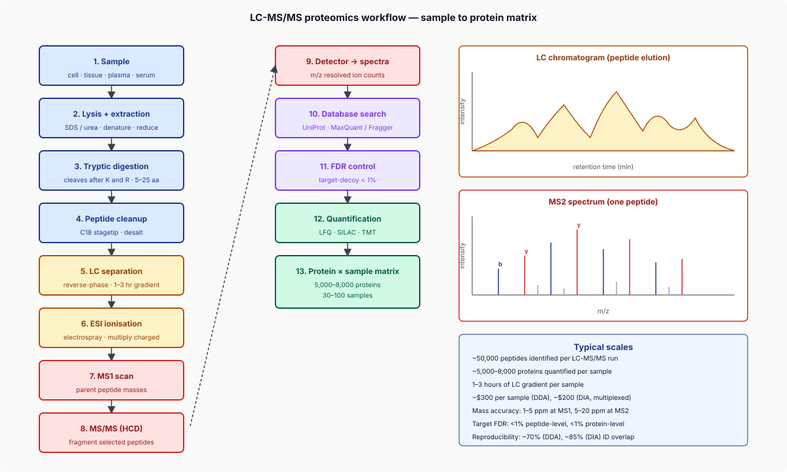
1.3 The fragmentation spectrum
In MS2, peptides fragment along the peptide backbone, producing b-ions (N-terminal fragments) and y-ions (C-terminal fragments). For a peptide LSDPYHRGSP:
- $y_1$: P (singleton C-terminal). $y_2$: SP. $y_3$: GSP. ...
- $b_1$: L. $b_2$: LS. $b_3$: LSD. ...
Each fragment has a calculable mass. The full b/y series gives the sequence. A real MS2 spectrum has these masses plus many low-intensity noise peaks; identification means matching observed fragment masses to a candidate peptide's predicted spectrum.
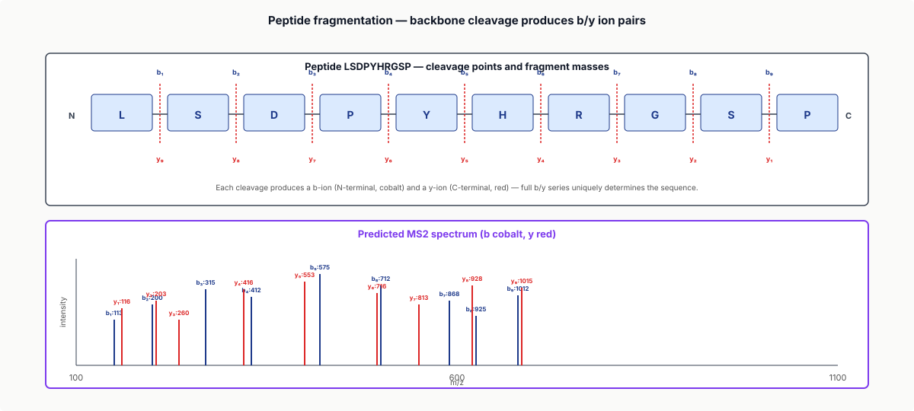
1.4 Database search
Given an observed MS2 spectrum and a protein database (e.g., UniProt human reference):
- In silico digest all proteins → candidate peptides.
- For each candidate, predict the theoretical b/y fragment masses.
- Score against the observed spectrum (cross-correlation or related).
- Best-scoring candidate = peptide identification.
Tools: Mascot (commercial, classic), MaxQuant (free, dominant), MS-Fragger (fast, modern), Comet.
1.5 The deep dive — peptide identification as constrained matched filtering
An MS2 spectrum is a 1D signal: $m/z$ on the x-axis, intensity on the y-axis. A candidate peptide's theoretical spectrum is a discrete set of expected peaks. Identification is matched-filter detection — does the candidate's predicted-peak pattern correlate with the observed signal? The constraint is enzyme-specific: only peptides ending in K or R (after trypsin) are candidates. Modern tools combine matched-filter scoring with statistical models (target-decoy FDR estimation).
Part 2 — Acquisition Modes (DDA vs DIA)
2.1 Data-dependent acquisition (DDA)
The classical mode:
- MS1 scan: identify the most abundant peptide masses.
- Pick the top-N (typically $N = 10$–$20$) most intense MS1 peaks.
- Fragment each in MS2 sequentially.
- Repeat throughout the LC gradient.
Advantages: well-validated, mature pipelines. Limitations: stochastic — if a peptide isn't in the top-N at some moment, it's missed. Peptide coverage varies between samples.
2.2 Data-independent acquisition (DIA)
Modern alternative:
- MS1 scan as before.
- Instead of picking specific peaks, systematically fragment all peptides in defined m/z windows (e.g., 20-Da windows from 400 to 1200 m/z = 40 windows).
- Each MS2 spectrum is a "co-fragmented mixture" — multiple peptides fragmenting simultaneously in the window.
- Identification: deconvolve the mixture using a peptide library or de novo.
Advantages: deterministic peptide coverage; reproducible across samples. Limitations: chimeric spectra need deconvolution; needs a spectral library or DIA-NN. DIA is becoming dominant for clinical / cohort-scale proteomics where reproducibility matters.
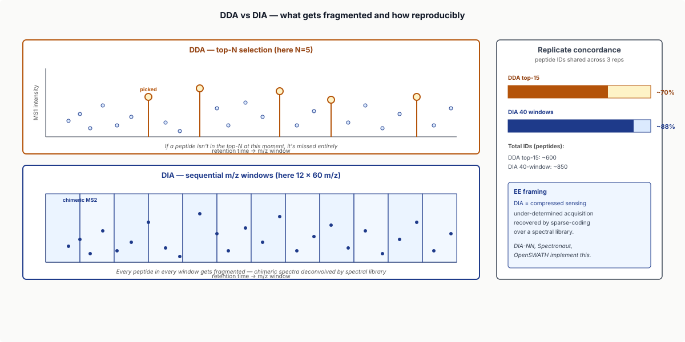
2.3 Targeted acquisition (MRM / PRM)
For absolute quantification of a few specific peptides:
- MRM (Multiple Reaction Monitoring): triple-quadrupole MS; measure specific precursor → fragment pairs.
- PRM (Parallel Reaction Monitoring): high-resolution variant.
Used for clinical biomarker quantification (e.g., troponin I, BNP) where precision matters more than coverage.
2.4 The deep dive — DIA as compressed sensing
In DIA, each MS2 spectrum is a superposition of peptide fragmentation patterns. The acquisition matrix is sparse — only peptides in the m/z window contribute. Identification is solving a sparse-recovery problem: find the smallest set of library peptides whose theoretical spectra explain the observed spectrum. This is structurally identical to compressed sensing: a sparse signal, an under-determined linear system, recovered via $\ell_1$ / sparse-coding approaches. Modern DIA tools (DIA-NN, Spectronaut, OpenSWATH) implement this with neural-network-trained spectral libraries.
Part 3 — Identification and FDR
3.1 Target-decoy strategy
How do we know how many false identifications we have?
Target-decoy: search not only against the real protein database (target) but also against a reverse / shuffled database (decoy). Decoy hits are by definition false. Compute $\text{FDR} = \text{decoy hits} / \text{target hits}$ at any score threshold.
Classical threshold: FDR < 1% at the peptide level. This generalises to FDR-based ML scorers like Percolator (Käll 2007): train a classifier on target/decoy features and use the predicted score for ranking.
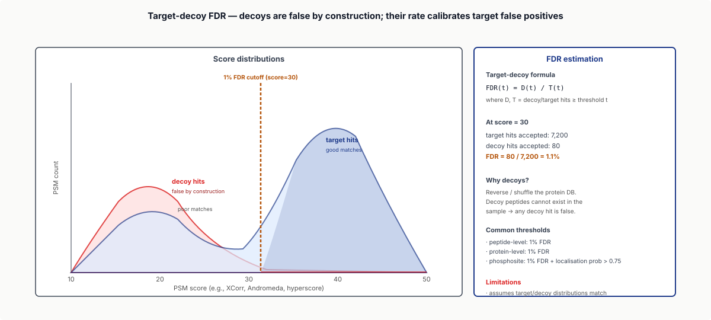
3.2 Protein inference
Peptides identify proteins, but:
- A peptide can be shared across multiple proteins (peptide ambiguity).
- A protein with no unique peptides cannot be unambiguously identified.
Razor peptide assignment: shared peptides assigned to the protein with the most unique peptides. Protein FDR: separately controlled (typically also < 1%); often more stringent than peptide FDR.
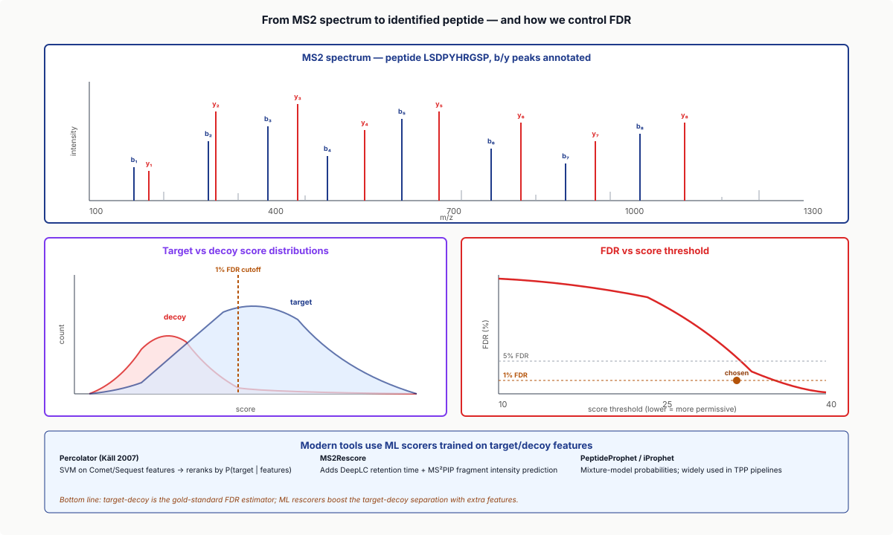
3.3 Modifications and PTMs
Post-translational modifications change peptide masses:
- Phosphorylation (S/T/Y): $+79.97$ Da.
- Acetylation (K, N-terminus): $+42.01$ Da.
- Methylation: $+14.02$ Da per methyl.
- Ubiquitination: GG remnant after trypsin = $+114.04$ Da on K.
- Glycosylation: complex, multi-glycoform.
Database search with variable modifications allows modified peptides to match — but each modification doubles the search space; many mods $\to$ combinatorial explosion. Modern tools (MaxQuant, FragPipe) handle ~10 common variable mods routinely.
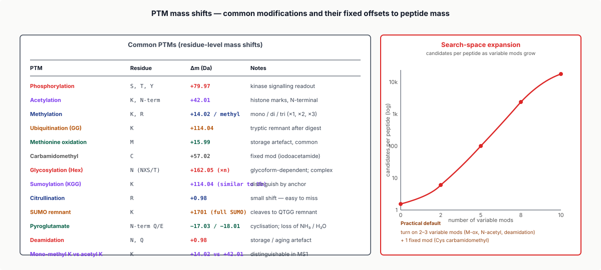
3.4 Specialised modifications: phosphoproteomics
Phosphorylation regulates kinase signalling. Phosphoproteomics:
- Enrich phosphopeptides via TiO2 or IMAC affinity columns.
- LC-MS/MS as standard.
- Identify phosphosites + their stoichiometry.
Output: ~20,000 phosphosites per typical experiment. Bridges with kinase signalling networks (L22) and CRISPR screens (L24).
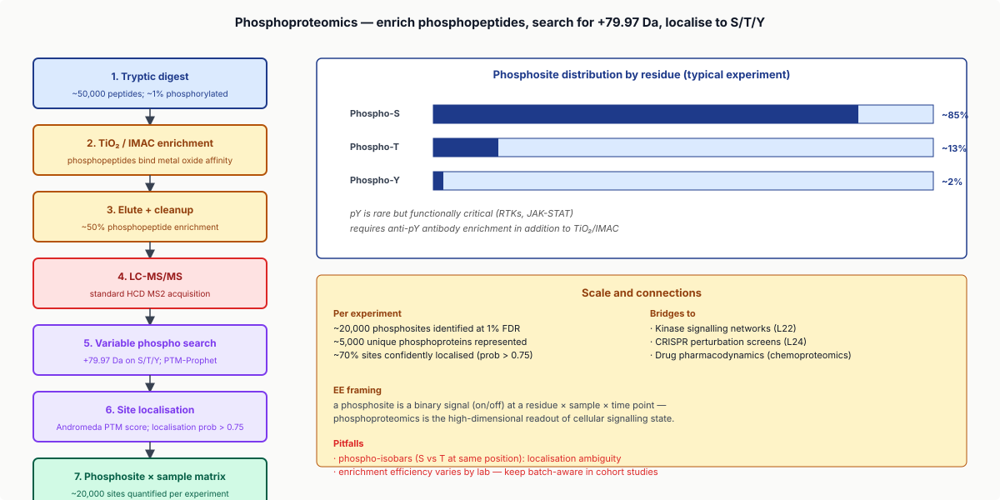
3.5 The deep dive — PTMs as codebook expansion
A peptide's mass spectrum is a base signal; a PTM adds a fixed offset to specific b/y fragments. Searching for PTMs = expanded matched-filter dictionary that includes modified variants. The combinatorial explosion (PTM combinations on multi-residue peptides) is exactly the codebook expansion problem in EE detection theory: search depth grows with the modification dictionary size.
Part 4 — Quantification
4.1 Label-free quantification (LFQ)
Without isotopic labels, quantify by MS1 ion intensity:
- For each peptide, integrate its MS1 elution profile across the LC-MS run.
- Compare across samples.
- Aggregate per-protein.
MaxQuant LFQ (Cox 2014) is the standard. Cheap, scalable, ~10–15% CV, but with missing values across samples.
4.2 SILAC
Stable Isotope Labeling by Amino acids in Cell culture (Mann 2002):
- Grow cells in media with isotopically labelled amino acids (e.g., heavy K, R).
- Mix with control (light) sample.
- LC-MS/MS — peptide pairs differ in mass by predictable $\Delta$.
- Quantify ratio = relative abundance.
Very accurate (~5% CV); paired comparison eliminates batch effects. Limitation: cell culture only.
4.3 Tandem Mass Tagging (TMT) and iTRAQ
Modern multiplexed quantification:
- TMT: chemical labels (typically 6-, 11-, 16-plex) added to peptides post-digestion.
- All samples mixed; LC-MS/MS as one run.
- MS2 spectra contain reporter ions at characteristic $m/z$; intensity = relative abundance.
6–16 samples in one run; reduced LC-MS time. Limitations: ratio compression (signal smearing); reagent cost (~$5,000 per 16-plex).
4.4 The DIA quantification advantage
DIA's deterministic peptide coverage gives much better LFQ-style quantification than DDA — typically 5% CV vs 15% for DDA-LFQ. For cohort work where reproducibility matters, DIA is now preferred.
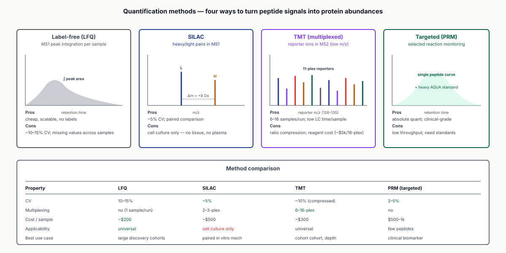
Part 5 — Statistical Analysis and Differential Abundance
5.1 The protein-level matrix
Output of a proteomics experiment: a protein × sample matrix of relative abundances. Typical scale: ~5,000–8,000 proteins × 30–100 samples — the proteomics analog of the L8 / L9 RNA-seq count matrix.
5.2 Differential abundance analysis
Adapted from RNA-seq:
- t-test with multiple-testing correction.
- limma (Smyth 2004): linear models with empirical-Bayes shrinkage.
- DEqMS (Zhu 2020): proteomics-specific extension of limma, handles missing values.
- ProDA (Ahlmann-Eltze 2020): probabilistic dropout-aware DE.
For a typical study: limma or DEqMS at FDR < 0.05.
5.3 Missing values: a proteomics-specific challenge
Proteomics data has lots of missing values:
- A peptide not detected in some samples might be missing-not-at-random (MNAR) — really not present.
- Or missing-at-random (MAR) — present but missed by stochastic acquisition.
Imputation strategies: half-min (assumes MNAR); KNN (assumes MAR); multiple imputation; or use DIA and skip imputation entirely. Choice matters: MNAR imputation creates bias if the missing actually are MAR.
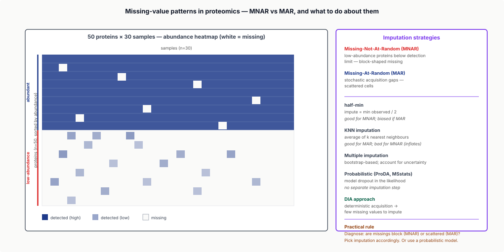
5.4 Pathway analysis
Same machinery as RNA-seq (L22): ORA / GSEA on protein abundance changes; KEGG / Reactome / GO enrichment; STRING-based network propagation. A typical proteomics paper reports DE proteins + pathway enrichment + (often) PPI network analysis.
Part 6 — Applications
6.1 Biomarker discovery
Plasma / serum proteomics for clinical biomarkers:
- Olink and SomaScan: ~5,000-protein affinity-based panels per blood draw.
- Simoa: single-molecule sensitivity for low-abundance proteins.
- Targeted LC-MS/MS (PRM): absolute quantification of validated biomarkers.
Examples: cardiac (troponin I, BNP, ST2); cancer (PSA, CA-125, CA 19-9); Alzheimer's (amyloid-β, tau, NfL). The plasma proteome has ~5,000 detectable proteins; ~50 are widely used clinical biomarkers.
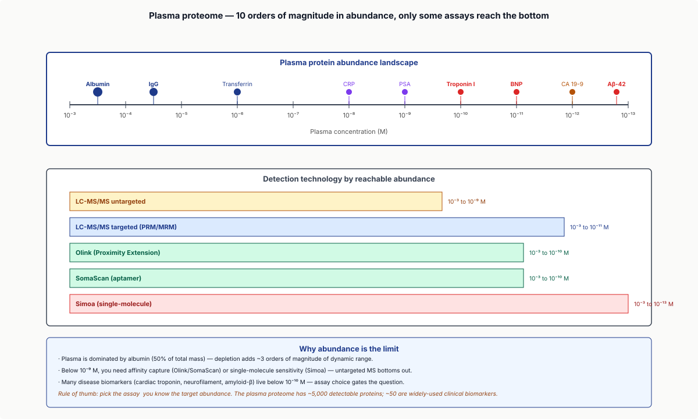
6.2 Chemoproteomics and target validation
Chemoproteomics: identify the proteins a drug binds in cells.
- Drug + photoaffinity / chemical-probe linker.
- Apply to live cells.
- Pull down crosslinked proteins.
- Identify by MS.
- → list of drug targets (and off-targets).
Tools: CETSA (cellular thermal shift), TPP (thermal proteome profiling), ABPP (activity-based protein profiling). The experimental complement to AlphaFold-based docking — find what a drug actually binds in cells, not what we predict it should bind.
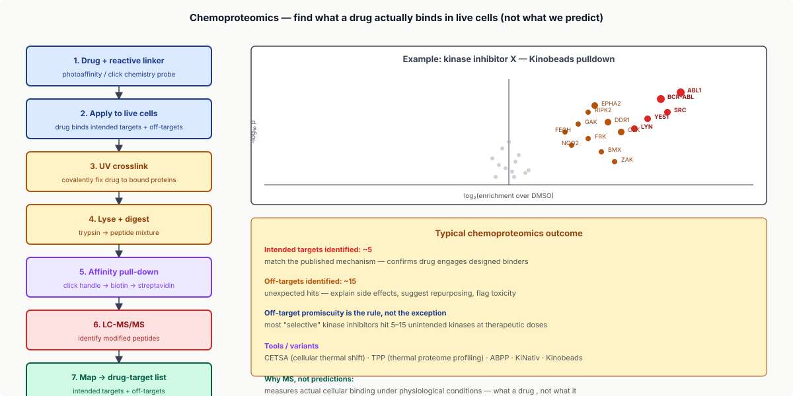
6.3 Structural proteomics
Identify protein–protein and protein–ligand interactions at near-atomic resolution:
- Cross-linking MS (XL-MS): chemical crosslinker captures interacting residues; MS identifies them.
- Hydrogen-deuterium exchange MS (HDX-MS): probe protein conformation changes upon ligand binding.
- Native MS: measure intact protein-complex masses.
Complements AlphaFold + cryo-EM for understanding drug-target structural details.
6.4 Single-cell proteomics
Emerging frontier (scProteomics):
- CITE-seq (with antibodies): not strictly MS, but ~100 proteins + scRNA-seq.
- PiMMS / Sonar: emerging single-cell MS workflows (~$1k/sample currently).
- Mostly research; clinical adoption years away.
2024 frontier additions: spatial proteomics (IMC, CODEX), proteoforms (specific isoforms × PTM combos), and PROTAC effects via chemoproteomics.
Part 6.5 — Metabolomics Primer
6.5.1 What metabolomics measures
Where proteomics measures the proteome (~20,000 proteins), metabolomics measures the metabolome — the small-molecule output of cellular metabolism: amino acids, nucleotides, lipids, sugars, organic acids, drug metabolites, hormones — typically 1,000–5,000 detectable molecules in human plasma.
The metabolome integrates upstream genetic + transcriptional + translational + enzymatic activity into a single readout. Often the closest measurement to phenotype:
- Diabetes: glucose, HbA1c, lactate, ketone bodies.
- Cardiovascular: LDL/HDL, triglycerides, ApoB, oxidised lipids.
- Cancer metabolism: 2-hydroxyglutarate (IDH-mutant gliomas), succinate (SDH-mutant paragangliomas).
- Drug response: pharmacokinetics measured at metabolite level.
- Microbiome: short-chain fatty acids, bile acids, indoles — host-microbiome cross-talk.
6.5.2 LC-MS/MS for metabolites
Same instrument as proteomics, but with different chromatography and ionisation:
- Reverse-phase LC: separates lipophilic compounds.
- HILIC: separates polar metabolites.
- Positive-mode ESI: ionises basic / amine compounds.
- Negative-mode ESI: ionises acidic compounds (organic acids, sugar phosphates).
Result: a 2D map (retention time × $m/z$) with intensity peaks per metabolite.
6.5.3 Identification challenges
Where peptides are identified by matching to a sequence database, metabolites are matched to metabolite databases — and the matching is much harder:
- HMDB (Human Metabolome Database, ~250,000 entries).
- METLIN: tandem-MS spectra for ~1M molecules (commercial).
- MoNA: community spectra.
- GNPS: networking-based.
Metabolites have no sequence to match. Identification leans on accurate mass (within 5 ppm), retention time (vs known standards), MS/MS fragmentation pattern, and isotope pattern. Even with all four, ~30–50% of detected peaks remain unidentified in typical untargeted runs.
The Metabolomics Standards Initiative confidence levels:
- Level 1: matched to standard (mass + RT + MS/MS).
- Level 2: putative annotation (mass + MS/MS match to DB).
- Level 3: putative class (mass + isotope match).
- Level 4: unknown feature.
6.5.4 Targeted vs untargeted
Targeted metabolomics: ~50–200 specific metabolites with calibration standards. Quantitative, validated, clinical-grade (Biocrates AbsoluteIDQ, Metabolon panels).
Untargeted metabolomics: all detectable features (~5,000–10,000 peaks). Discovery-mode; semi-quantitative. Used for biomarker discovery and mechanism studies. The distinction mirrors targeted vs full DIA in proteomics.
6.5.5 Lipidomics
Lipidomics measures the lipid fraction (~10,000+ species). Lipids are organised by class (phospholipids, sphingolipids, sterols, fatty acids, glycerolipids) with characteristic head groups + variable acyl chains.
Tools: LipidSearch, LipidBlast, LipidMatch. Clinically relevant biomarkers: LDL particle subclasses, ceramides (diabetes / heart failure), plasma free-fatty-acid profile, drug-induced lipid shifts.
6.5.6 Multi-omics integration
Modern translational pipelines combine proteomics + metabolomics with genomic / transcriptomic data:
- mGWAS: SNPs → metabolite levels → trait association. MR (L25) often uses metabolite IVs.
- Multi-omics ML: proteomics + metabolomics + transcriptomics for diagnostic classifiers.
- Pathway-level integration: KEGG / Reactome (L22).
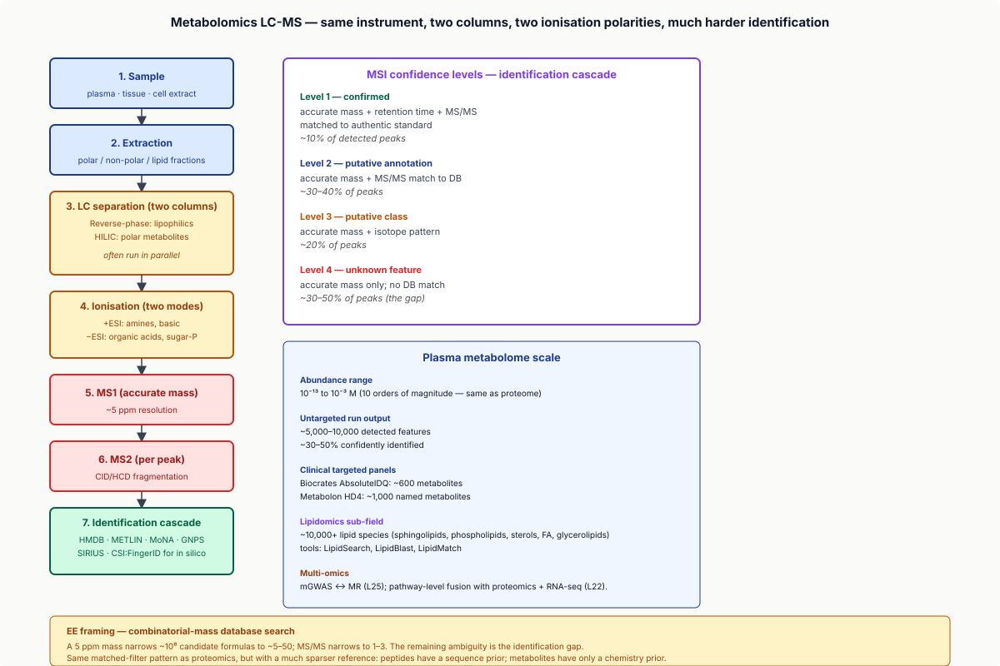
EE framing: a metabolite has a molecular formula → exact mass; the database has ~$10^6$ candidate formulas in plausible composition space. A 5 ppm mass measurement narrows to ~5–50 candidates; MS/MS narrows to 1–3. The remaining ambiguity is the identification gap. Tools like SIRIUS and CSI:FingerID use deep learning on fragmentation. Same matched-filter pattern as proteomics, but with a much sparser reference: peptides have a sequence prior; metabolites have only a chemistry prior.
Part 7 — Tools, Pitfalls, Workflows
7.1 The standard 2024 stack
- Search engines: MaxQuant (DDA, free), MS-Fragger / FragPipe (fast DDA, free), DIA-NN (DIA), Spectronaut (DIA, commercial).
- Quantification: built-in to search engine.
- Statistical analysis: limma (R), DEqMS, MSstats.
- Visualisation: Perseus (the MaxQuant ecosystem; visual + stats).
For a clinical Olink / SomaScan study: vendor-specific QC, then standard limma / nlme.
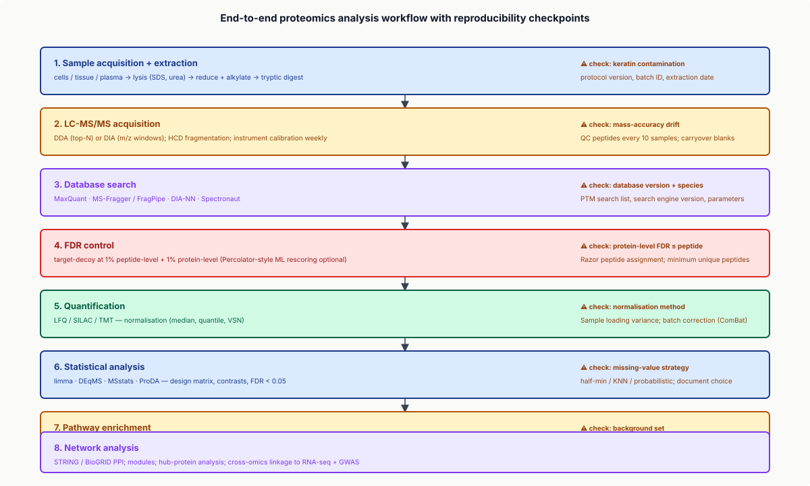
7.2 Common pitfalls
Sample preparation: keratin contamination (skin, sample handling); incomplete tryptic digestion → missed-cleavage peptides.
Acquisition: DDA stochastic coverage; mass-accuracy drift; carryover between samples.
Identification: wrong PTM searches → many false-positive PTM IDs; database mismatch → systematic mis-ID; multi-protein peptide ambiguity.
Quantification: handle missing values explicitly; ratio compression in TMT; batch effects even within a single experiment.
7.3 Reproducibility
- DIA workflows: ~80–85% protein-ID overlap across replicates.
- DDA: ~70% identification overlap.
- Differential abundance hits: ~60–70% replication across cohorts.
Better than microbiome (~50%); worse than RNA-seq (~85%).
7.4 The 2024 frontier
- DIA + ML libraries: DIA-NN's NN-trained spectral libraries enable database-free DIA analysis.
- AlphaPeptDeep / Pulsar: deep-learning spectrum prediction for closer matched-filter detection.
- Foundation models for proteomics, pre-trained on millions of MS2 spectra.
Wrap-up
What you should take away
- MS proteomics measures protein abundance, the post-transcriptional readout. Correlates only modestly with mRNA ($r \approx 0.5$).
- LC-MS/MS (bottom-up): protein → trypsin → peptides → LC → MS1 / MS2 → identification → quantification.
- DDA vs DIA: DDA is stochastic; DIA is deterministic. DIA is becoming the cohort-scale standard.
- Identification by database search + target-decoy FDR. Modern tools: MaxQuant, MS-Fragger / FragPipe.
- Quantification: LFQ (cheap), SILAC (cell culture), TMT (multiplexed). Choose by question + budget.
- Applications: biomarker discovery (Olink, SomaScan, plasma MS), chemoproteomics, structural proteomics (XL-MS, HDX-MS).
- Metabolomics: same instrument, sparser reference, ~30–50% of peaks unidentified.
- EE framings: spectra as 1D signals; peptide ID as constrained matched-filter search; PTMs as codebook expansion; DIA as compressed sensing.
Next lecture
This is the last lecture in the proposed 27-lecture arc. The protein-level signals you learned here complement single-cell mRNA — modern multimodal experiments combine both. Next steps: pick a public dataset and run an end-to-end proteomics analysis (homework problem 1).
Homework
- Run MaxQuant on a public proteomics dataset (e.g., an HEK293 LC-MS/MS run). Identify peptides at 1% FDR; report protein count + identification overlap with the published list.
- Pick a specific PTM (phosphorylation, acetylation). Run a dedicated search; identify modified peptides. Compare to a non-PTM search.
- Implement label-free quantification on simulated MS1 elution profiles. Add 30% missing values; compare imputation strategies (half-min, KNN, no imputation).
- From an Olink panel of 100 plasma proteins for a cohort, run differential abundance for case vs control. Interpret the hits in terms of biology.
- Walk through a published chemoproteomics study (e.g., kinase-inhibitor target ID via Kinobeads). Re-derive the target identification logic.
Recommended reading
- Aebersold, R., & Mann, M. (2003). Mass spectrometry-based proteomics. Nature 422, 198–207.
- Cox, J., et al. (2014). Accurate proteome-wide label-free quantification (MaxLFQ). Molecular & Cellular Proteomics 13, 2513–2526.
- Tyanova, S., et al. (2016). The MaxQuant computational platform. Nature Protocols 11, 2301–2319.
- Käll, L., et al. (2007). Semi-supervised learning for peptide identification (Percolator). Nature Methods 4, 923–925.
- Demichev, V., et al. (2020). DIA-NN: neural networks and interference correction. Nature Methods 17, 41–44.
- Mann, M. (2002). The rise of mass spectrometry. TiBS 27, 233–235. (SILAC origins.)
- Thompson, A., et al. (2003). Tandem Mass Tags. Analytical Chemistry 75, 1895–1904.
- Savitski, M. M., et al. (2014). Tracking cancer drugs by thermal profiling (TPP). Science 346, 1255784.
- MaxQuant: maxquant.org
- DIA-NN: github.com/vdemichev/DiaNN
- Olink: olink.com
- ProteomicsDB: proteomicsdb.org
- HMDB: hmdb.ca
Appendix — timing summary
| Block | Time | Cumulative |
|---|---|---|
| Part 1 — From Spectrum to Peptide | 25 min | 0:25 |
| Part 2 — Acquisition Modes | 25 min | 0:50 |
| Part 3 — Identification and FDR | 30 min | 1:20 |
| Part 4 — Quantification | 25 min | 1:45 |
| Part 5 — Statistical Analysis | 25 min | 2:10 |
| Part 6 — Applications | 20 min | 2:30 |
| Part 6.5 — Metabolomics Primer | 30 min | 3:00 |
| Part 7 — Tools and Pitfalls | 15 min | 3:15 |
| Wrap-up | 10 min | 3:25 |
Total: ~3h 25min of content.